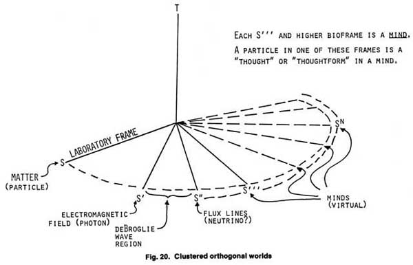
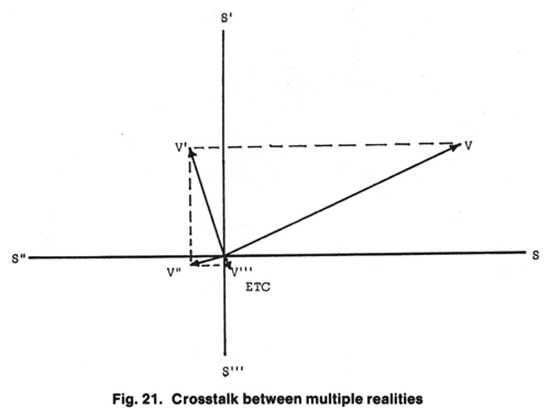

| The Tom Bearden Website |
| Psychic Observer
39(3) ~ 224, 255-258 "Paranormal Pictures" Tom Bearden The photograph on page 92 of Pursuit (Summer 1977) is a fairly easy paranormal phenomenon to obtain. Briefly, one model of reality can be constructed whereby orthogonal worlds (3D spaces) all share the same 4th dimension, time, much like spokes of a wheel around an axle. In this model, all 3-spaces, three or more orthogonal turns away from the laboratory 3-space (i.e., from the observer’s spatial frame) are minds or mind-worlds. Each thought is an object in the mind-world of the thinker, in such a model.  Further, all the 3-spaces crosstalk a tiny bit, usually so small a magnitude as to be virtual (unobservable even in theory).  However, under certain amicable conditions, thought-forms or thought energies in such thought worlds can superpose sufficiently to breach the threshold between worlds. When progressively turning or rotating towards the laboratory frame as a result of such superposition, the tulpoid energies/forms pass first into one frame away, which constitutes the ordinary electromagnetic field. In that frame they can affect ordinary photographic film, particularly film which is sensitive in the ultraviolet or infrared. In fact, if visible light is of low intensity or nonexistent, the effect is enhanced because visible light is a quenching of the paranormal channel. Quite simply, the infrared and UV regions are essentially windows into other orthogonal 3-spaces and hence mindworlds. If the effect of visible light is lessened or eliminated, but these windows are left open, paranormal pictures are fairly simple to initiate.
Further, any type of ionization discharge/spark discharge/cascade discharge serves as a sort of collector for the tulpoidal energy to superimpose upon and emerge from. In this case, it is the candle flame, with millions of glowing, energetic, excited photon-emitting molecules and atoms that it is acting as the cascade collector for the effect. In Kirlian photography, e.g., it is the spark discharge. Here the ordinary light is what is impressed on the film, but it is the rotating of higher fields into the EM field that forms and shapes the changes noted in the discharge pattern. Water also enhances the effect. A Geiger counter tube, e.g., contains a cascade discharge mechanism—and Geiger counter readings are often obtained in association with paranormal phenomena. Here it is not actually radioactivity that is being read, but cascading electrons. The higher fields, when superimposing sufficiently to reach the first orthogonal frame, then start inducing or producing charge in conductive paths, hence cause bursts of electrons to start in the first stage of the Geiger tube, initiating the cascade discharge and the reading. Note also that Fuji film seems to be a bit more sensitive to infrared and to UV than ordinary film. So in the situation photo, it is probably a burst or discharge of orthorotated thought energy or emotional energy that emerges from the candle flame. Parallelism of the two lines from each pair shows the coherence (timewise) that is necessary to have such superposition of higher biofields and consequent threshold orthorotation of them into the ordinary UV window. Finally, one other effect is important: the kindling or flashing effect, i.e., repetitive shots or snaps also pulses through the IR/UV windows and causes time oscillations a la Kozyrev. If the visible light quenching effect (dampening) of the persistent decay curve of each pulse is not too great, then the pulses build into resonance—or bursts across the threshold through the UV/IR windows. Bearden’s Hypothesis: The quenching of the hyper-channel (the paranormal channel) by photon interaction (i.e., by light) is proportional to the spectral luminous efficiency. A host of data fits this hypothesis. It also explains the sensitivity of cats and other animals (whose eyes work further into the UV/IR portions of the spectrum than do the eyes of humans) to paranormal phenomena. However, animals which compete in a sunlit world must also hold onto that quenching peak at the visible light peak at about 570 nanometers wavelength. Otherwise, they would become so preoccupied with the paranormal (tulpa) dither in/out that some other animal not so preoccupied would eat them. For the same reason, competition forces humans to do likewise. The photon interaction—which quenches the hyperchannel by differentiating and removing time—creates objectively (L3, separated spatially), totally. And this is clearly shown by the most fundamental experiment of quantum mechanics, Young’s two-slit experiment. And God said, "Let there be light!"—and that was objective creation, the separation of the L3 spatial macroworld from the dimensionless, timeless, nothingness/allness voidless void. We have only just begun to comprehend. This science of this whole area is investigated in much greater detail in Tom's seminal book "Excalibur Briefing - Exploring Paranormal Phenomena."
|